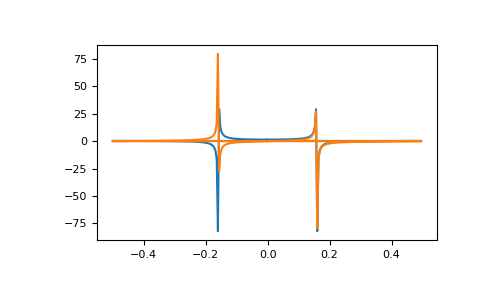

numpy.fft.fft¶
-
numpy.fft.fft(a, n=None, axis=-1, norm=None)[source]¶ Compute the one-dimensional discrete Fourier Transform.
This function computes the one-dimensional n-point discrete Fourier Transform (DFT) with the efficient Fast Fourier Transform (FFT) algorithm [CT].
- Parameters
- aarray_like
Input array, can be complex.
- nint, optional
Length of the transformed axis of the output. If n is smaller than the length of the input, the input is cropped. If it is larger, the input is padded with zeros. If n is not given, the length of the input along the axis specified by axis is used.
- axisint, optional
Axis over which to compute the FFT. If not given, the last axis is used.
- norm{None, “ortho”}, optional
New in version 1.10.0.
Normalization mode (see
numpy.fft). Default is None.
- Returns
- outcomplex ndarray
The truncated or zero-padded input, transformed along the axis indicated by axis, or the last one if axis is not specified.
- Raises
- IndexError
if axes is larger than the last axis of a.
See also
Notes
FFT (Fast Fourier Transform) refers to a way the discrete Fourier Transform (DFT) can be calculated efficiently, by using symmetries in the calculated terms. The symmetry is highest when n is a power of 2, and the transform is therefore most efficient for these sizes.
The DFT is defined, with the conventions used in this implementation, in the documentation for the
numpy.fftmodule.References
- CT
Cooley, James W., and John W. Tukey, 1965, “An algorithm for the machine calculation of complex Fourier series,” Math. Comput. 19: 297-301.
Examples
>>> np.fft.fft(np.exp(2j * np.pi * np.arange(8) / 8)) array([-2.33486982e-16+1.14423775e-17j, 8.00000000e+00-1.25557246e-15j, 2.33486982e-16+2.33486982e-16j, 0.00000000e+00+1.22464680e-16j, -1.14423775e-17+2.33486982e-16j, 0.00000000e+00+5.20784380e-16j, 1.14423775e-17+1.14423775e-17j, 0.00000000e+00+1.22464680e-16j])
In this example, real input has an FFT which is Hermitian, i.e., symmetric in the real part and anti-symmetric in the imaginary part, as described in the
numpy.fftdocumentation:>>> import matplotlib.pyplot as plt >>> t = np.arange(256) >>> sp = np.fft.fft(np.sin(t)) >>> freq = np.fft.fftfreq(t.shape[-1]) >>> plt.plot(freq, sp.real, freq, sp.imag) [<matplotlib.lines.Line2D object at 0x...>, <matplotlib.lines.Line2D object at 0x...>] >>> plt.show()
